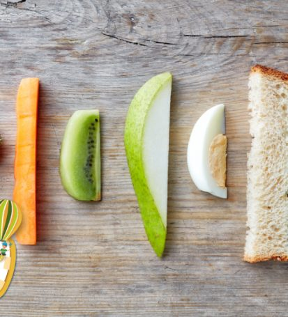

Taller de Alimentación complementaria y blw
Para familias con bebés que están por arrancar la alimentación complementaria y para las que ya empezaron y quieren aprender más.
Para familias con bebés que están por arrancar la alimentación complementaria y para las que ya empezaron y quieren aprender más.